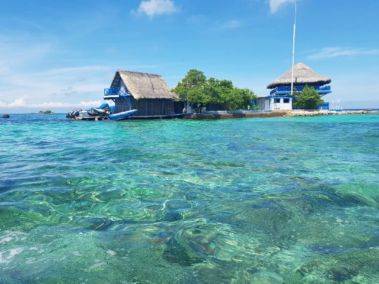

Amapá é um estado localizado na região Norte do Brasil, fazendo fronteira com a Guiana Francesa e o oceano Atlântico. Sua capital é Macapá, que também é a única capital brasileira cortada pela Linha do Equador. A economia do Amapá é baseada na exploração de recursos naturais, como a mineração (especialmente o minério de ferro), além da agricultura e da pesca. O estado tem uma grande área de floresta amazônica e várias reservas naturais, o que atrai turistas interessados em ecoturismo e observação de fauna e flora. O Amapá também é conhecido por sua cultura rica, com forte presença de influências indígenas e afro-brasileiras, refletidas nas festas tradicionais e na culinária regional, como o famoso tacacá e a galinha de caça.
